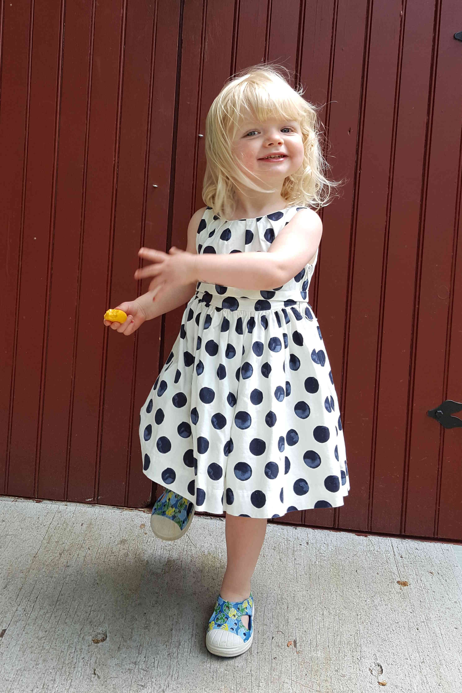

SDS Newsletter
Program Updates
It has been an incredibly big year for our fledgling program in Statistical & Data Sciences! Our program can now claim to have Smith’s newest major. In keeping with Smith’s tradition for blazing trails, we are the first women’s college—and only the second liberal arts college—in the country to have a major that includes “data science” in its title. The major in SDS consists of 10 courses, including depth in both statistics and computer science, an integrating course in data science, a course that emphasizes communication, and an application domain of expertise. We have developed a number of new courses to support this curriculum. We hope to be able to continue to add new faculty members to the program to staff these expanded offerings. The immediate success of our recent alumnae (more on that later) has played no small role in building the momentum our program is seeing on campus!
Some more updates:
Five new courses were developed and taught in 2015-16.
- SDS 235: Visual Analytics (Fall 2015)
- SDS 390: Advanced Topics in SDS (Fall 2015)
- SDS 136: Communicating with Data (Spring 2016)
- SDS 192: Intro to Data Science (Spring 2016)
- SDS 293: Machine Learning (Spring 2016)
Yiwen Zhu ’16 completed a self-designed major in “Statistical & Data Sciences” before the official major was approved, so she is our first unofficial graduate. Yiwen also majored in PSY and will attend an M.A. program in biostatistics at the Harvard School of Public Health.
In 2015, MassMutual Financial Group awarded Smith College an $800,000 grant for the Women in Data Science Program. Funds were used to hire two visiting assistant professors to deepen the curriculum in data science. The visiting professors include:
R. Jordan Crouser ’08, Visiting Assistant Professor, MassMutual Faculty Fellow
Jordan’s research program investigates the complementary nature of human and machine computation as used in visual analytics and other human-machine collaborative systems. Jordan earned his M.S. in educational technology and Ph.D. in computer science from the VALT: Visual Analytics Laboratory at Tufts University in 2013, and is a 2008 graduate of Smith College.Amelia McNamara, Visiting Assistant Professor, MassMutual Faculty Fellow
Amelia has a Ph.D. in statistics from the University of California, Los Angeles, and a B.A. from Macalester College, with double majors in English and mathematics. Amelia’s research is multidisciplinary, including components of statistics education, statistical computing, data visualization, and spatial statistics.
Smith was awarded a three-year $287,426 grant from the Association of American Colleges and Universities (AAC&U), Project Kaleidoscope (PKAL), their STEM higher education reform center dedicated to “Teaching to Increase Diversity and Equity in STEM” (TIDES). Smith is using this funding to concentrate on the retention of underrepresented students in computer science, including designing and implementing SDS 192 as a “first contact programming”” course.
Since the inauguration of the program, six Smith alums have been hired by MassMutual Financial Group as Data Analytics Consultants. All of them are participating in the exclusive Data Science Development Program. This is an intense, three-year program that combines academic coursework with the practical experience of working on data science projects for MassMutual. The Smith Data Analytics Consultants include:
- Deirdre Fitzpatrick ’14: B.A. in Mathematics with a concentration in statistics.
- Dana Udwin ’14: B.A. in Mathematics with a minor in East Asian Languages & Literature.
- Galen Long ’15: B.A. in Computer Science with a minor in Logic.
- Emma Beauchamp ’16: B.A. in Sociology with a minor in Applied Statistics.
- Martha Miller (AC) ’16: B.A. in Psychology with a minor in Applied Statistics.
- Jordan Menter ’16: B.A. in Mathematics
- Deirdre Fitzpatrick ’14: B.A. in Mathematics with a concentration in statistics.
Deirdre Fitzpatrick ’14 and Dana Udwin ’14 presented their work done at MassMutual Data Labs in Amherst on “Data Visualization with D3.” Nearly 50 students, faculty, and local data professionals were in attendance at this event.
Amanda Cox, a graphics editor at the New York Times, gave a talk on “Data Visualization at the New York Times” on December 4, 2015, to nearly 200 people.
Yiwen Zhu ’16 and Emma Beauchamp ’16 shared Smith’s Five College Statistics Prize for outstanding independent research, thesis, or capstone course project in statistics. Yiwen (a psychology-statistics double major) and Emma (a sociology major and applied statistics minor) both completed outstanding senior theses in their respective fields. Yiwen studied client emotional response during psychotherapy sessions, while Emma studied the role of stigma in sexual health behavior in adolescent girls. Both applied a wide range of statistical techniques and demonstrated exceptional statistical maturity in their work.
Please follow us on Twitter @SmithCollegeSDS or visit our website for more information on the program! There is also a Facebook group. Please help us reach out to other alumnae by having them contact me!
Faculty Updates
- We hired Randi L. Garcia as a tenure-track faculty member. Randi’s position will be split jointly with Psychology. Randi earned her B.A. in psychology and women’s studies from the University of California, Los Angeles and her Ph.D in social psychology from the University of Connecticut. She also completed an M.S. in statistics at UConn. After graduate school she held a postdoctoral research associate position at Princeton University. Randi’s current research in small group processes continues to explore how demographic differences and individuals’ identification with their social groups influence psychological group formation. The focus of this work is on finding the contexts that make demographic differences more salient and more potent predictors of a person’s feelings towards the group in addition to exploring the effects of group composition and identification on the behaviors within these groups.
- Smith is conducting a search for a tenure-track faculty position in SDS for the fall 2017. This will bring the program’s permanent staffing level to 3.0 FTE (new person, Baumer, and 50% of Garcia and Halvorsen) in addition to the two MassMutual Faculty Fellows (Crouser and McNamara).
- R. Jordan Crouser ’08 has received two grants from the U.S. Department of Defense totaling more than $100,000. These research projects include:
- “Theoretical Models of Human-Machine Interaction in Streaming Analysis Contexts.”
- “A Survey of Visual Analytics Tools for Effective Decision-Making.”
- Ben Baumer shared the Contemporary Baseball Analysis Award for his article “OpenWAR: An Open Source System for Evaluating Overall Player Performance in Major League Baseball,” which appeared in the June 2015 edition of the Journal of Quantitative Analysis.
Ben Baumer
I’m continuing to build my “three-legged stool” consisting of sports analytics, statistics and data science education, and network science. This past year I wrote a widely-read article for ESPN.com about the state of analytics in baseball, had a paper on our data science course published in The American Statistician, and completed a paper on graph labelling with the help of Yijin Wei ’16 that will be published in Discussiones Mathematicae Graph Theory. Right now I’m trying to finish a textbook on data science using R. After serving as Director of SDS for two years and I am happy to hand over that responsibility to Joe O’Rourke of the computer science department. SDS is the fastest-growing department at Smith and there is still much work to be done as we launch our official major! Here is a recent picture of my daughter eating a cheese wheel (couldn’t resist):

R. Jordan Crouser
is beginning his second year as a Visiting Assistant Professor and MassMutual Faculty Fellow in the Statistical and Data Sciences Program. His research interests are Human-Computer Interaction and Visual Analytics, with a focus on human computation and human-computer teams. With the support of an incredible team of SEVEN undergraduate research assistants, work in the Human Computation and Visualization Laboratory is rapidly gaining speed. New this summer: Jordan and his team have begun a collaboration with practitioners in Community-Based Mental Health! In this project, we explore how computational tools might help provide more equitable access to services, as well as how insights from the field might help computer scientists better understand how humans think.
Randi Garcia
is a new faculty member joining SDS and Psychology this Fall. She is interested in the analysis of nested data from pairs and groups of people including when those measurements are taken overtime. Her research in psychology investigates the effects of race and gender in interpersonal encounters. Specifically, she is interested in the effects of sexual objectification and how are attitudes about race affect interracial friendships. Randi is looking forward to teaching statistics in the SDS department next spring!
Katherine Halvorsen
We expanded our statistics and data science electives through the new program in Statistics and Data Sciences this year, and I was pleased to have the opportunity to teach a new course in the fall term, “Categorical Data Analysis,” a 300-level elective for our advanced statistics students. Ten students from Smith, UMass, and Mount Holyoke enrolled in the course. I also taught Research Design in the fall and one section of Introduction to Probability and Statistics (MTH/SDS 220) and its two lab sections in the spring. This summer I am working with a research assistant on a project looking at financial investment strategies from a statistical perspective. Our hope for this project is to develop some new options for student projects in MTH/SDS 220.
I also serve on the Mathematics Academic Advisory Committee of the College Board and continue to direct the MWM Program for the American Statistical Association (ASA). MWM provides a workshop for high school and middle school teachers to learn to teach the statistics in the Common Core State Standards for Mathematics, and the ASA sponsors MWM each year at the Joint Statistics Meetings in August.
Amelia McNamara
just completed her first year as a visiting assistant professor in the Statistical and Data Sciences program. She was happy to return to a liberal arts setting (her BA is from Macalester College, where she double-majored in English and math) and loved all the bright, curious students. In April, she gave a talk called “Do you know Nothing when you see it?” at Bocoup’s OpenVisConf. This summer, she is balancing research with travel to a number of conferences and workshops.
As an incoming TIER fellow, she will be attending a workshop on reproducible research at Haverford College, followed by a workshop on teaching R at Pomona College, and the R user’s conference, useR!, at Stanford University. Later in the summer she will attend the SIAM annual meeting in Boston, Joint Statistical Meetings in Chicago and the Youth, Learning, and Data Science Summit at UC Berkeley.
Alumnae Updates
Maja Miloslavjevic ’14: Maja currently works at MIT Lincoln Laboratory where she enjoys researching network analytics for big data. This fall, she’ll be pursuing an MS in CS at Tufts University and is very excited to continue her education in data science.
Deirdre Fitzpatrick ’14: I am working at MassMutual in the Data Science Development Program out of Amherst, MA. At the same time, I am working on getting my MS in statistics at UMass Amherst, and should be finishing that up next spring.
Jingyang (Judy) Zhang ’14: I am still at Smith working for ITS as Application Systems Analyst. I have been working on projects related to pulling data from and writing data to the DB. I am currently working on Smith new website’s directory, writing web services that pull directory data into the website and display it nicely.
Lizzy Atkins ’15: I am working with Dr. Anne Comi at the Kennedy Krieger Institute / Johns Hopkins in Maryland in the neurology department. I am doing research on a rare genetic disease, Sturge-Weber syndrome. I work on data analysis every day, manuscript preparation, submissions to conferences, and clinical recruitment tasks with our patients. We are about to get stared with an FDA-approved, NIH-funded clinical drug trial that I will spearhead gulp. I very much enjoy what I am doing though I am looking forward to the next step - graduate school!
In my spare time, I am studying for the GRE and working as a Smith alumnae admissions coordinator for the Smith College Club of Baltimore. I get to talk about all things Smith to interested applicants - the BEST role for me!Yadira Flores ’15: Currently, I am an application developer for Wharton Research Data Services on their data team. My work implements many of the skills I learned in classes like Data Science. My work involves coding in Python and SAS – a statistical language I was able to pick up quickly because of my experience with R and SQL – to bring on new financial data and update existing data. At the present time, our team is also working on creating visualizations for the most popular financial databases so I applying my visualizations knowledge that I learned in my Statistics classes.
I’m learning many new technical skills such as learning about Linux, database storage, and general coding skills. I’m really enjoying my job and I know this will be a good stepping stone to my career.Yungjen Kung ’15: I’m glad that Smith is offering more data science courses and wish I had the chance to take them! I’m still at Northwestern, working on an MS in analytics. I will be graduating December 2016 and will be interning at Nielsen this summer.
Galen Long ’15: Galen’s currently in the MassMutual Data Science Development Program, a three-year program that combines graduate coursework with hands-on company projects. They spend their days running Python scripts with Apache Spark, learning more about statistics, and cursing at their computer.
Erika Miguel ’15: My first year out of college has been an exciting roller coaster. I started as a software developer at Goldman Sachs in July, building APIs and Java/AngularJS webapps. I put in my two weeks notice two weeks ago and on Monday will be joining a startup in Soho, where I’ll be a DevOps engineer.
Sara Stoudt ’15: I am finishing up my first year in the Statistics PhD program at UC Berkeley. Some highlights (besides surviving :D) were helping to organize Berkeley’s first DataFest and working on an interdisciplinary project as part of the Data Sciences for the 21st Century: Environment and Society program. I will be splitting my time this summer between NIST, the National Center for Atmospheric Research, and the San Francisco Estuary Institute.